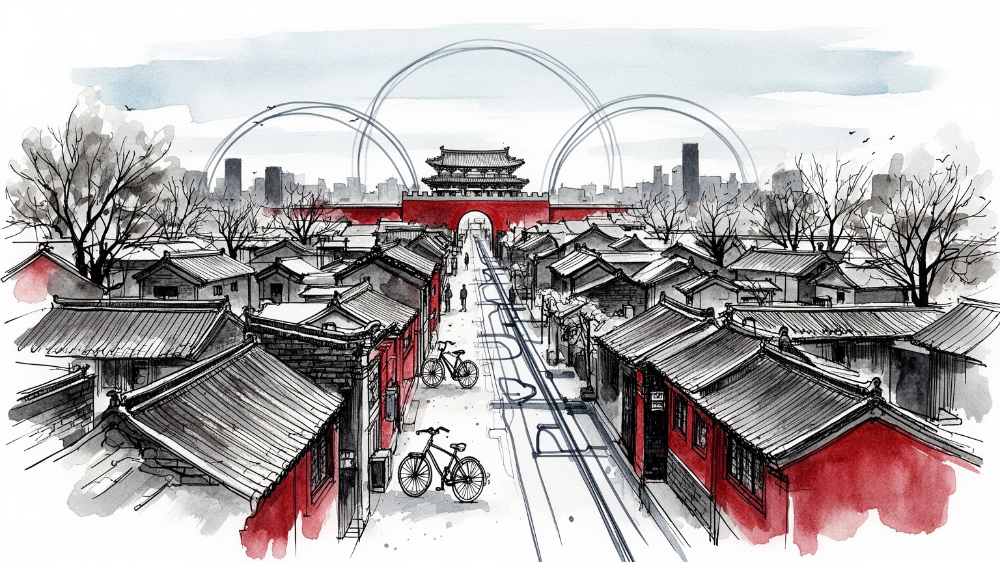

地政学
華北平原北端にあり、皇城、中央政府、大学、IT地区、環状道路が国家首都の構造を作る。

🇨🇳 中国 / アジア / World City Atlas
皇城と国家機関の首都。世界都市として、経済規模だけでなく、地理、産業、宗教文化、暮らし、観光を分けて読みます。
都市の骨格
華北平原北端にあり、皇城、中央政府、大学、IT地区、環状道路が国家首都の構造を作る。

華北平原北端にあり、皇城、中央政府、大学、IT地区、環状道路が国家首都の構造を作る。
政府、国有企業、大学、研究機関、IT、金融、自動車が集まり、政策と技術の都市になっている。
儒教的政治文化、仏教、道教、イスラム、キリスト教が重なり、胡同は生活文化の記憶を残す。
故宮、天安門、天壇、頤和園、CBD、798芸術区が、帝都と現代都市の対比を見せる。
Geography
都市の経済力は、地図上の位置、港湾、鉄道、空港、河川、周辺都市との関係から生まれます。
華北平原北端にあり、皇城、中央政府、大学、IT地区、環状道路が国家首都の構造を作る。
北京を単体の市街地としてではなく、周辺の住宅地、産業地、物流施設、教育機関と接続した都市圏として見ると、GDPの大きさが日々の通勤、土地利用、観光、文化施設の配置にどう表れているかが分かります。
政府、国有企業、大学、研究機関、IT、金融、自動車が集まり、政策と技術の都市になっている。
この都市では、華やかな中心業務地区の背後に、清掃、建設、配送、調理、介護、教育、保守、警備といった日常的な労働があります。都市の経済規模を見るときは、数字だけでなく、その数字を支える人と場所を同時に見る必要があります。
Industry
主力産業だけでなく、周辺の小さな仕事が都市を毎日動かしています。
Culture
宗教施設、祭礼、市場、劇場、大学、移民地区は、都市の経済とは別の時間を保存します。
儒教的政治文化、仏教、道教、イスラム、キリスト教が重なり、胡同は生活文化の記憶を残す。
故宮、天安門、天壇、頤和園、CBD、798芸術区が、帝都と現代都市の対比を見せる。